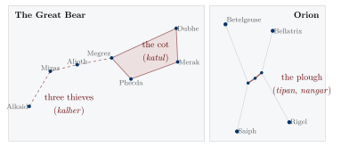

Chapter 6: Folk Astronomy, Calendars and Weather Knowledge¶
6.1 Introduction: Sky and Season¶
Farmers, herders and fishers everywhere watch the sky and the living world for signs of the season and the weather. In India this everyday knowledge exists alongside a learned astronomical tradition, jyotiṣa, one of the six auxiliary sciences (vedāṅga) of the Veda, which developed into a mathematical astronomy and a system of calendars and almanacs (pañcāṅga); it is treated in Volume 12, Khagola Jyotiṣa. Folk knowledge borrows from this tradition, especially its calendar, but it also rests on direct observation of stars, moon, winds, clouds, plants and animals.
This chapter describes that knowledge. It is also cautious. Systematic studies of Adivasi astronomy are few, and much that has been written on the subject is anecdotal or invented. Claims that particular communities could predict eclipses or forecast monsoons as well as modern meteorology are not supported by evidence and are not repeated here. Four kinds of knowledge are involved: calendars that reckon months and seasons by the moon, the sun and the work of the year; the flowering, fruiting and leaf-fall of plants and the behaviour of animals as markers of season; named stars used to tell the time at night; and signs read in winds, clouds and animals as warnings of rain or drought.
6.2 The Nakṣatra Rain Calendar¶
The classical calendar divides the sun’s yearly path among the stars into twenty-seven nakṣatras (lunar mansions), each of about thirteen and a third degrees, so that the sun spends roughly thirteen or fourteen days in each. Across much of India, farmers name the rains of the monsoon season after the nakṣatra in which the sun stands. In Maharashtra the first rains of June are the Mṛg rains, followed by Ārdrā, Punarvasu, Puṣya and so on; in Bihar and eastern Uttar Pradesh the late rains of Hasta (Hathiyā), in late September and early October, are considered vital for the rice crop. Sowing, transplanting and other work are timed by these periods, and proverbs say which crops do well or badly if a particular nakṣatra brings rain or fails to. The periods of the monsoon season are listed in Table 6.1.
| Nakṣatra | Sun enters (approx.) | Popular association |
|---|---|---|
| Rohiṇī | 25 May | Nautapā: intense heat before the monsoon |
| Mṛgaśiras (Mṛg) | 8 June | First monsoon rains in western India; sowing begins |
| Ārdrā | 22 June | Main sowing of rain-fed crops |
| Punarvasu, Puṣya | 6 and 20 July | Steady monsoon rains; transplanting of rice |
| Āśleṣā, Maghā | 3 and 17 August | Heavy rains; weeding |
| Pūrvā, Uttarā (Phalgunī) | 30 August, 13 September | Late monsoon |
| Hasta (Hathiyā) | 27 September | Late rains considered vital for rice in eastern India |
| Citrā, Svātī | 10 and 24 October | Retreating monsoon; rain in Svātī is proverbially rare and precious |
Because the dates of these periods are fixed by the sun’s position, they fall on nearly the same dates of the Gregorian calendar every year, which makes them a practical solar calendar for agricultural work. They do not, of course, forecast whether rain will actually fall.
In north India a popular belief holds that the nine days after the sun enters Rohiṇī (late May to early June), the nautapā, should be very hot if the monsoon is to be good. In Tamil Nadu a well-known proverb, āṭip paṭṭam tēṭi vitai (“seek out the Āṭi season and sow”), advises sowing in the month of Āṭi (mid-July to mid-August).
6.2.1 The Almanac in the Village¶
The printed pañcāṅga (almanac), produced in many regional editions, lists for each day the lunar day (tithi), the nakṣatra, festivals, auspicious times and, in many editions, forecasts of rain and harvest for the year. Village priests and astrologers consult it to fix the dates of festivals, weddings and agricultural rites. Its rainfall forecasts are astrological predictions, not meteorology. Many Adivasi communities also use it, or consult a priest who does, for festivals shared with their neighbours, while fixing their own festivals by village decision and the season.
6.2.2 Ghāgh and Bhaḍḍarī¶
In the Hindi, Bhojpuri and Awadhi regions, a large body of rhyming proverbs about weather, crops and farming is attributed to the folk sages Ghāgh and Bhaḍḍarī, figures of uncertain date about whom many legends are told. The proverbs advise on when to sow and harvest, how to judge soil and oxen, and how to read winds, clouds and the behaviour of animals for signs of rain. Collections of these proverbs were made in the colonial period and continue to be published. They are a rich record of farmers’ observations and beliefs, of very varying reliability.
6.3 Adivasi Calendars¶
Adivasi communities of central and eastern India mostly use month names shared with the neighbouring Indo-Aryan calendars, but organise the year around their own festivals and work. For the Munda, Oraon, Santal and their neighbours, the year turns on a cycle such as the one shown in Table 6.2.
| Season (approx.) | Festival | Associated activity and signs |
|---|---|---|
| January–February | Māgh festivals | End of the agricultural year; in Santal custom village officials are reappointed |
| March–April | Sarhul / Bāhā | Flowering of the sal tree; worship in the sacred grove; first use of new flowers and leaves |
| March–April | – | Mahua flowers collected |
| June–July | – | First rains; sowing and transplanting of rice |
| August–September | Karam | Branch of the karam tree worshipped; prayers for crops and kin |
| October–November | Sohrāe | Harvest; cattle honoured |
Such calendars are anchored as much in phenology as in astronomy: the flowering of sal and mahua, the first thunderstorms, the swarming of termites, the arrival and departure of migratory birds. They are robust because several signs confirm each other, and flexible because festivals are fixed by village decision rather than by an almanac.
6.3.1 The Shifting Cultivator’s Year¶
In the hills of the North-East, the calendar of shifting cultivation structures the year. Plots are selected and cut in the cool dry months, left to dry, and burned shortly before the first pre-monsoon rains; sowing follows immediately, so that the ash is not washed away; weeding occupies the monsoon months; and different crops are harvested in turn from late summer to early winter. Festivals mark the main stages: among many Naga communities, for example, a festival after sowing and another after harvest. Communities judge the time for burning and sowing by the weather, by the flowering of particular trees and by the calls of particular birds, and their elders decide the date for the whole village, since burning must be coordinated to prevent fires from spreading (Ramakrishnan 1992).
6.4 The Night Sky¶
Many Adivasi communities name stars and star groups and use them to tell the time at night and to mark seasons. The Pleiades and the stars of Orion, conspicuous in the winter night sky, are recognised almost everywhere, as are the Great Bear, the Milky Way and the morning and evening star (Venus). Names and stories differ from community to community: star groups may be seen as animals, hunters, a plough, a cot or a group of people, and the Milky Way as a road or river.
Systematic documentation is recent and limited. The most detailed work so far comes from a team led by the astrophysicist Mayank Vahia of the Tata Institute of Fundamental Research and Ganesh Halkare of Amravati, who surveyed Gond villages in the borderlands of Maharashtra, Telangana (then Andhra Pradesh) and Madhya Pradesh and then the Kolam and Banjara of the same region (Vahia and Halkare 2013; Vahia et al. 2014). Their papers are the main basis of what follows. Further work of this kind, done with the communities concerned, is needed before general statements about Adivasi astronomy can be made with confidence.
6.4.1 The Gond Sky¶
In March 2011 Vahia and Halkare visited fifteen Gond villages between Chandrapur, Yavatmal, Adilabad, Gondia, Balaghat, Mandla, Seoni and Nagpur. To make sure that everyone was talking about the same stars, they projected images of the night sky on village walls, and in 2012 a group of twenty-three Gond villagers from three districts explained their sky to the team inside the planetarium of the Raman Science Centre at Nagpur (Vahia and Halkare 2013). Names varied from village to village, as one would expect across several Gondi dialects and a long contact with Marathi and Hindi, but a recognisable common sky emerged.
The seven bright stars of the Great Bear are a cot (katul), often “the old woman’s cot”, with the three stars of the handle seen as thieves (kalher) trying to carry it off; in one Mandla village the three were a nobleman, his wife and the village watchman. The belt of Orion is tipan or nangar, a plough, and nearby stars are seen as other implements of the threshing floor: a grain-beater, a stool on which the winnower stands, a basket. The Pleiades were variously named: as a grain-beater (kotela), as a broom, or, in one village’s story, as stones thrown by the hunter of Orion at a bird and its eggs nearby. The Milky Way is a road, sometimes “the path of the animals”. Figure 6.1 shows the cot and the plough. Venus is known as the evening star that signals the time for the evening meal (jevan sukum) and as the morning star that signals the start of the working day (pahat sukum). Comets are brooms, and shooting stars “star droppings”. Far to the south, the Southern Cross is a mahua tree, irukmara, whose appearance at about three in the morning marks the season for gathering mahua flowers; among the Gond this was recorded in only one village, but the Kolam know it widely (below).

The sky is used above all for time. Villagers told the time of night by the rising of particular stars; they knew that the monsoon comes when Orion’s belt is seen at sunset and that farm work begins when a certain four-sided group of stars stands overhead before dawn; and a halo round the moon was read as a sign of rain, nearer or farther according to its size. Months run from new moon to new moon, and several villages knew that an extra month must be inserted about every three years to keep the lunar year in step with the seasons. Gond organisations now print their own calendars in Gondi, listing the community’s festivals by the lunar month; the 2007 calendar used by Vahia and Halkare listed twenty-four.
6.4.2 Kolam and Banjara Skies¶
The Kolam, who were shifting cultivators and foragers on the hill ridges of the same region until the mid-twentieth century, share part of the Gond sky: they too see a cot in the Great Bear, but the three thieves are a Kolam, a Gond and a chief (pradhān), a small picture of the region’s social world; and they too see a mahua tree in the Southern Cross (Vahia et al. 2014). They describe the Pleiades as one large bird with several small ones, and see in the square of stars that the researchers identified with Pegasus a great lake, samdur, that gives water to the land. They have elaborate stories of eclipses, in which gods come to collect their dues from the sun; if they take the whole sun they are satisfied, and if they take only part, people or animals must make up the shortfall.
The Banjara, whose livelihood as carriers of grain and salt by pack-bullock collapsed with the railways, have by comparison a sparse sky: the Great Bear as the cot of the dead, the Pleiades as forehead jewellery, Orion as a deer, the Milky Way as the path of the dead. For predicting the monsoon they rely much more on the halo round the moon and on terrestrial signs, such as the placing of crows’ nests, the direction of lightning and ants carrying their eggs, than on stars. Table 6.3 sets out some of the names recorded in the three communities.
| Star group | Gond | Kolam | Banjara |
|---|---|---|---|
| Great Bear | Cot (katul) and thieves (kalher) | Cot, with a Kolam, a Gond and a chief as thieves | Cot of the dead (jamakhat) |
| Orion | Plough (tipan, nangar) | Sowing implement (tipan); also a hunter’s belt and sword | Deer (halni) |
| Pleiades | Grain-beater or broom; stones thrown at a bird | One large and several small birds | Forehead jewel (jhumko) |
| Milky Way | Road; path of the animals | Path of the animals | Path of the dead or of animals |
| Southern Cross | Mahua tree (irukmara) | Mahua tree | – |
6.4.3 Reading the Studies Critically¶
These surveys are valuable because they record names, stories and uses directly from people and check the identifications against the actual sky. But their limits should be kept in view. Each rests on short visits to a small number of villages in one region, and on the memories of mainly older men; women’s knowledge of the sky, and the knowledge of Gond communities in Bastar, Odisha or the Narmada valley, are hardly represented. Some identifications are uncertain, as the authors themselves note. The authors also go beyond the evidence in places. From the story that the old woman whose cot is the Great Bear never sleeps, and from the absence of a Gond name for the pole star in most villages, they infer that Gond sky lore took shape around 1000 BCE, when the Great Bear was circumpolar for central Indian latitudes; and they describe the Gond and Kolam as genetically and culturally isolated. Neither inference is secure. A star story cannot be dated by precession unless one can show that it has not been reshaped since, and a few villages did name the pole star, one of them with a Gondi name; Gond, Kolam, Pardhan and Banjara have lived alongside one another and alongside Marathi- and Telugu-speaking peasants for centuries, as the thieves in the Kolam Great Bear themselves suggest. Their suggestion that the richness of a community’s sky lore follows the length of its settled agricultural life is an interesting hypothesis from three cases, not a finding.
The same team has since published comparable surveys of the Korku and the Pardhi of central India (Vahia et al. 2016; Halkare et al. 2019). For the Santal, Munda, Ho and other communities of eastern India no systematic modern study of sky knowledge has yet been made, and the star names and stories scattered through older ethnographies have not been brought together. The best work in this field will come from collaboration in which members of the communities themselves decide what is recorded and how it is used.
6.4.4 Eclipses¶
Eclipses are explained in many communities by stories of a being who swallows the sun or moon; in the classical and popular Hindu tradition this is the demon Rāhu. Customs during eclipses include fasting, bathing, making noise and giving alms. The Kolam stories of gods collecting their dues, described above, are a local example; the Gond villagers surveyed by Vahia and Halkare, by contrast, had little or nothing to say about eclipses (Vahia and Halkare 2013). These are matters of belief and ritual. There is no evidence that any Adivasi community had a method for predicting eclipses; eclipse prediction in India was the work of mathematical astronomers using the siddhānta texts.
6.5 Weather Signs¶
Rural people throughout India read signs of coming weather:
-
winds: the direction and character of winds before and during the monsoon, such as the moist easterly purvaiyā in the Gangetic plain;
-
clouds and sky: the shape, colour and movement of clouds, a halo round the moon, the colour of the sky at sunset;
-
animals: ants carrying eggs to higher ground, the swarming of termites, the calls of particular birds, frogs croaking;
-
plants: heavy flowering or fruiting of particular trees taken as a sign of a good or bad monsoon.
Some of these signs reflect real physical connections: changes in humidity and air pressure before rain affect insects and birds, and haloes are produced by high ice clouds that often precede the arrival of a weather system. Others are probably coincidences remembered because they were sometimes right. Few such indicators have been tested systematically. UNESCO’s review of traditional knowledge for climate change assessment concludes that such knowledge is most useful for local observation of change and for adaptation, in combination with scientific forecasting (Nakashima et al. 2012).
6.5.1 Local and Scientific Forecasting Compared¶
Modern meteorology uses satellite observations and numerical models of the atmosphere; it is good at forecasting large-scale weather a few days ahead and at issuing warnings of cyclones and heavy rain, and its seasonal monsoon forecasts are probabilistic and regional. Local knowledge, by contrast, is based on observation of a small area and its living indicators, and is expressed in qualitative terms. It may capture local features that regional forecasts miss, such as the behaviour of a particular valley or coast; it is less reliable for anything beyond the immediate future. The two are most useful together: agricultural advisories that translate scientific forecasts into local language and local terms, and that draw on farmers’ own observations, are more likely to be understood and used than either alone.
6.6 Disasters: Cyclones and the 2004 Tsunami¶
The coast of Odisha was struck in October 1999 by a “super cyclone” that killed many thousands of people. In October 2013 Cyclone Phailin, of comparable strength, struck the same coast; this time, after accurate forecasts by the India Meteorological Department, the state moved very large numbers of people to cyclone shelters and other safe places, and the loss of life was a small fraction of that in 1999. The improvement came from better forecasting, shelters, planning and community preparedness. Local knowledge of the coast and of which places are safe is part of community preparedness; but it was modern forecasting and evacuation that saved most lives.
The Indian Ocean tsunami of 26 December 2004 devastated the Nicobar Islands and the coasts of the Andaman Islands and Tamil Nadu. Among the Andaman Islanders, the Onge, Jarawa and Great Andamanese were widely reported to have suffered few or no deaths, because they moved inland or to high ground after the earthquake. Commentators attributed this to traditions about earthquakes and the sea and to the islanders’ close observation of their environment; the islanders’ own accounts have been documented only partially. By contrast, the Nicobarese, who lived in villages on low coasts, suffered heavy losses.
6.7 Climate Change¶
Local observations of a changing climate (less predictable monsoons, shifts in the flowering of trees, new pests, drying springs) are discussed in Section 2.17. For the knowledge described in this chapter, change poses a particular problem: the very regularities on which folk calendars and weather signs depend are being disturbed, and knowledge calibrated to the past may become less reliable (Nakashima et al. 2012). That is one more reason to test widely used indicators with farmers, and to record calendars and star names in the communities’ own languages while those who hold them can still explain them.
Key Points
-
Folk calendars combine the classical nakṣatra system with festivals and the phenology of plants and animals.
-
Systematic studies of Adivasi astronomy are few; claims of eclipse prediction or forecasting equal to meteorology are unsupported.
-
Weather signs range from genuine physical indicators to remembered coincidences and need testing.
-
Lives in cyclones and tsunamis are saved mainly by forecasts, shelters and evacuation, with local knowledge as a complement.